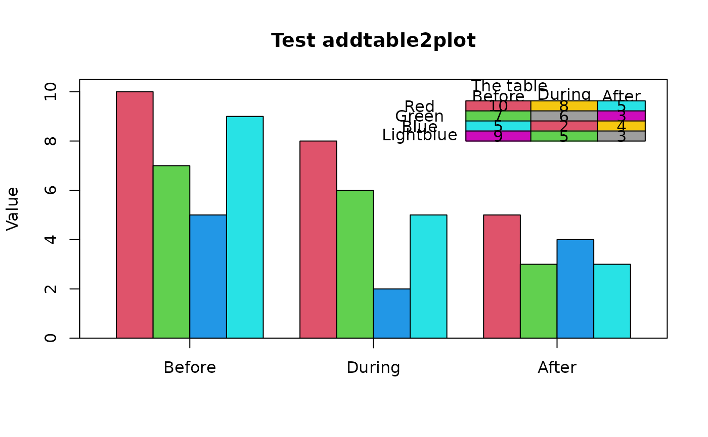

Add a table of values to a plot
addtable2plot.RdDisplays a table of values at a user-specified position on an existing plot
Arguments
- x,y
Either x and y coordinates to locate the table or an xy.coords object.
- table
A data frame, matrix or similar object that will be displayed.
- lwd
The line width for the box and horizontal dividers.
- bty
Whether to draw a box around the table ("o") or not ("n").
- bg
The background color for the table.
- cex
Character expansion for the table.
- xjust,yjust
Positioning for the table relative to x,y.
- xpad,ypad
The amount of padding around text in the cells as a proportion of the maximum width and height of the strings in each column.
- box.col
The color for the box and lines.
- text.col
The color for the text.
- display.colnames
Whether to display the column names in the table.
- display.rownames
Whether to display the row names in the table.
- hlines
Whether to draw horizontal lines between each row of the table.
- vlines
Whether to draw vertical lines between each column of the table.
- title
Optional title placed over the table.
Details
addtable2plot displays the values in table at a position in user coordinates specified by x,y. The two justification arguments, xjust and yjust are the same as in the legend function, and addtable2plot has been programmed to be as similar to legend as possible. The function now accepts the positional arguments such as "topright" if passed as x. The defaults are those that were most popular in scientific journals at the time of programming.
If bg is a matrix of colors of the same dimensions as x, those colors will be the backgrounds of the cells. The default is no background color.
Author
Original by John Kane, mods by Jim Lemon and Brian Diggs. Thanks to Andrija Djurovic for asking for the individual cell colors and Gabor Grothendieck for alerting me to the problem of widely varying column widths.
Examples
testdf <- data.frame(Before = c(10, 7, 5, 9), During = c(8, 6, 2, 5),
After = c(5, 3, 4, 3))
rownames(testdf) <- c("Red", "Green", "Blue", "Lightblue")
barp(testdf, main = "Test addtable2plot", ylab = "Value",
names.arg = colnames(testdf), col = 2:5)
# show most of the options including the christmas tree colors
abg <- matrix(c(2, 3, 5, 6, 7, 8), nrow=4, ncol=3)
addtable2plot(2, 8, testdf, bty = "o", display.rownames = TRUE, hlines = TRUE,
vlines = TRUE, title = "The table", bg = abg)
